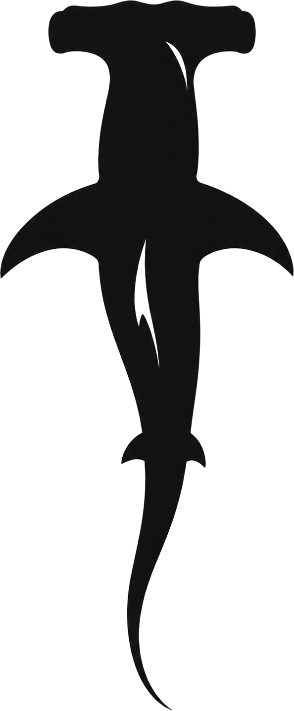
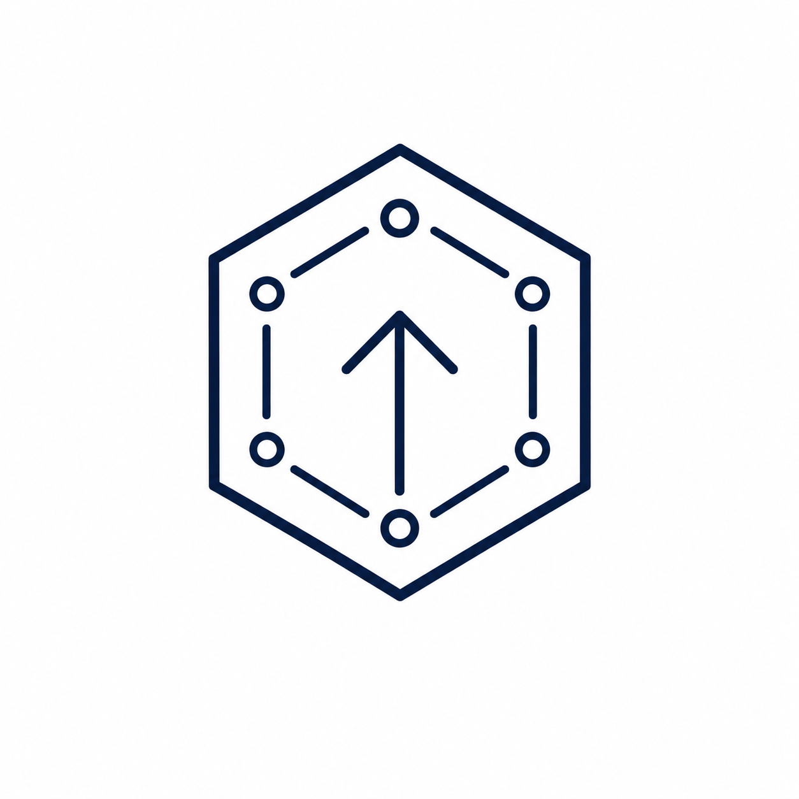
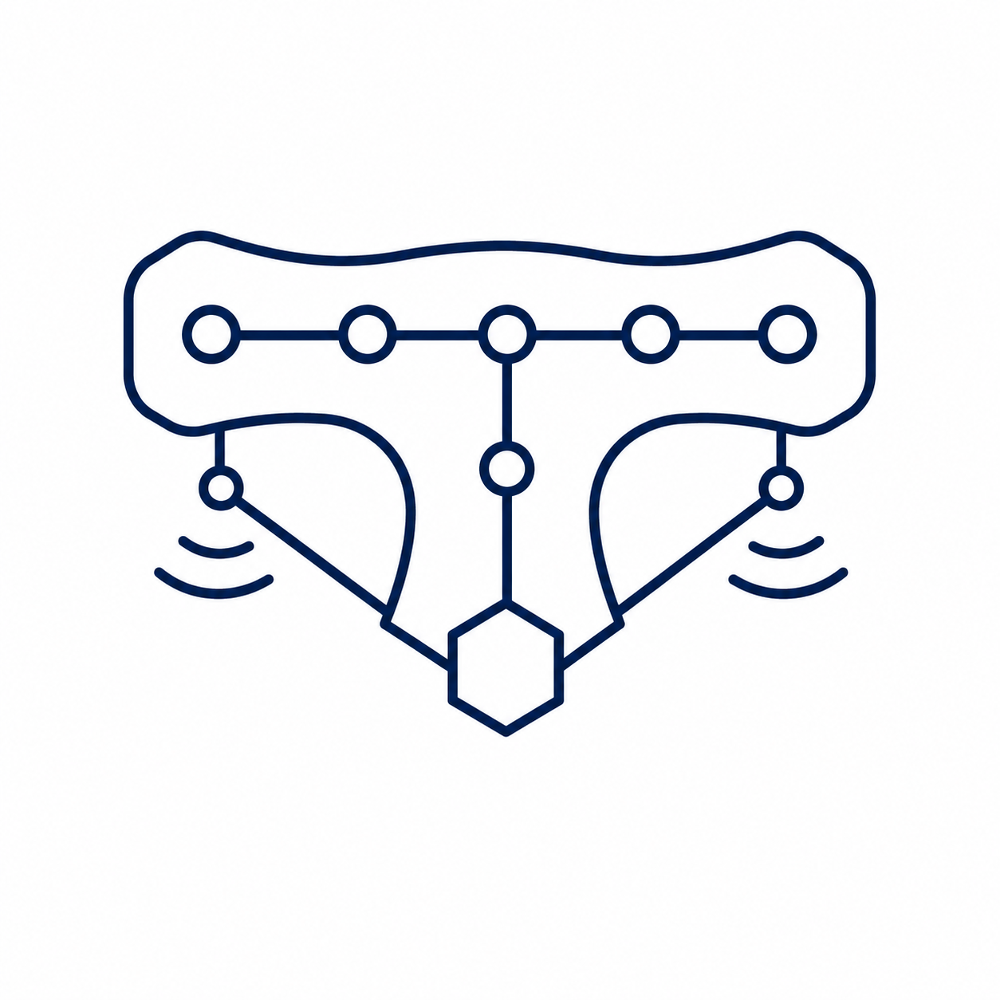
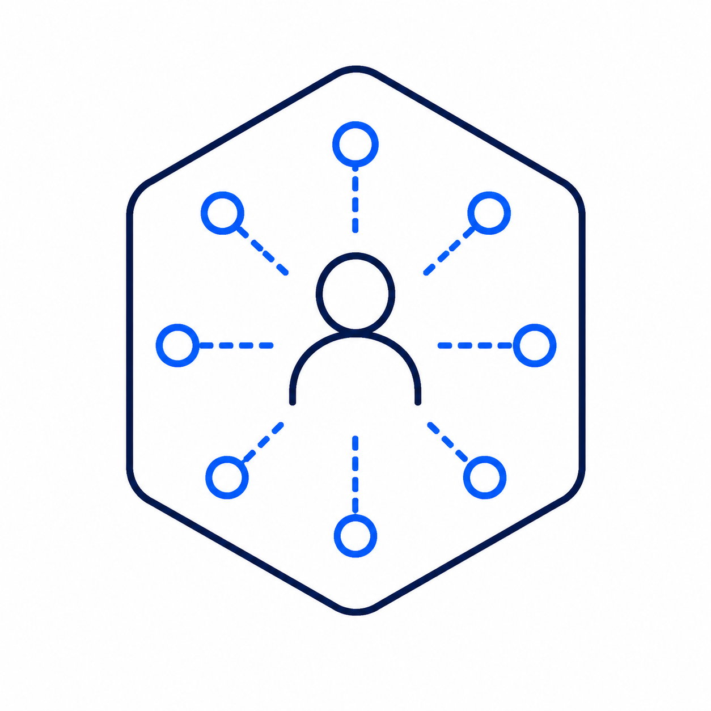
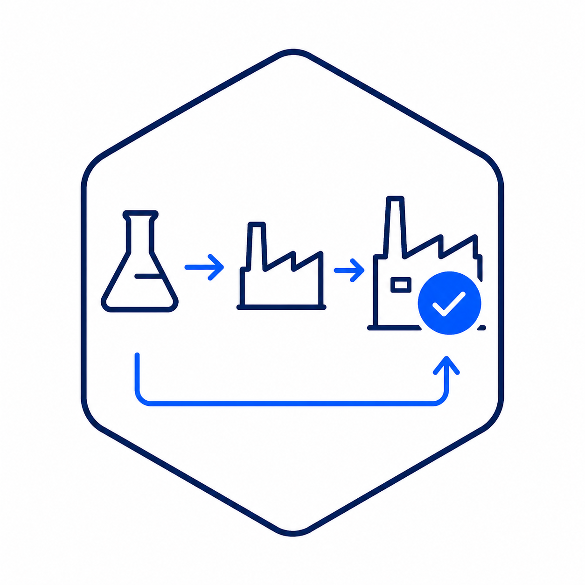

Because what you don't anticipate will dominate.
An independent authority on the safe adoption of inspection, maintenance and surveillance robotics, and the OT infrastructure beneath them in heavy industry.

Built for critical environments, where disciplined execution beats noisy disruption. Safe, scalable, adoption-ready by design.
A full 4π-steradian view: across people, process, technology, risk and operations, and in every direction. Because the failure is always in the direction nobody looked.

Every relevant signal connected and interpreted, turning data into decisions heavy industry can act on with confidence.
Assurance and planning that carry a system from pilot to an asset that is sustainably fit for service.
Assessment of the technology, the claims, and the deployment reality, by someone with nothing to sell.
Advocating a framework that qualifies the people, certifies the equipment, and assures the process — for sustainable performance.
An independent voice at board level on whether — and how — to commit.
How companies adapt to novelty, govern transformation and align culture — that is the real frontier. Most programmes stall not because the technology fails, but because none of the other elements were ever included in the process. That gap — between a working demonstration and an asset that is sustainably fit for service — is where twenty-five years have been spent.
I started as an aircraft engineer building and certifying avionic systems — designing and physically installing the equipment and wiring, modifying the airframe & structures that carried it — and then had to prove, against an airworthiness standard and with my name on it, that the aircraft was safe to fly. This is a discipline, and it is not paperwork: a certificate is not the same thing as a safe aeroplane, and someone has to be able to tell the difference.
I have been doing the same job ever since — across industries where operational safety and quality assurance are critical: oil and gas, chemical, nuclear, marine and aviation. Coming through the ranks as a control and automation engineer, and along the way meeting the same problem from every side: from engineering and operations, to engineering sales and projects, then to business development, before consultancy on the operator's side and finally onto quality assurance, standards, safety and reliability. From poacher to gamekeeper. Most recently I led robotics, sensing, integrity and inspection, and OT strategy at BP.
The problem I keep meeting is the same one. The technology is rarely the difficulty. The organisation it lands in — the people, the process, the OT infrastructure beneath it, and the authority to actually adopt it — is where the value is won or lost. Certified doesn't mean safe; working in a trial doesn't mean working on your asset. Closing that gap is one continuous discipline, not four careers, and it is the whole of what I do.
Today I do that work independently, through my own practice, Dewhurst.tech — as an advisor, a board member, or a hands-on lead, depending on what the decision needs.

I have nothing to sell but judgement. My loyalty is to whether the operation works once the pilots are finished — not to any box, platform or vendor inside it.
A programme stalls when the organisation around it was never brought with it. I work across the whole picture — the technology, the OT infrastructure beneath it, the standards, the people, and the authority to actually adopt — and say what it will really take.

The question is never whether it works in a trial. It is whether it is sustainably fit for service on a live asset — and a certificate alone cannot answer that. The operator's risk case can. That is the question I am built to answer.
If you are facing a decision on the adoption of inspection, maintenance or surveillance robotics — or the OT infrastructure beneath it — I'd be glad to think it through with you.
steve@dewhurst.tech